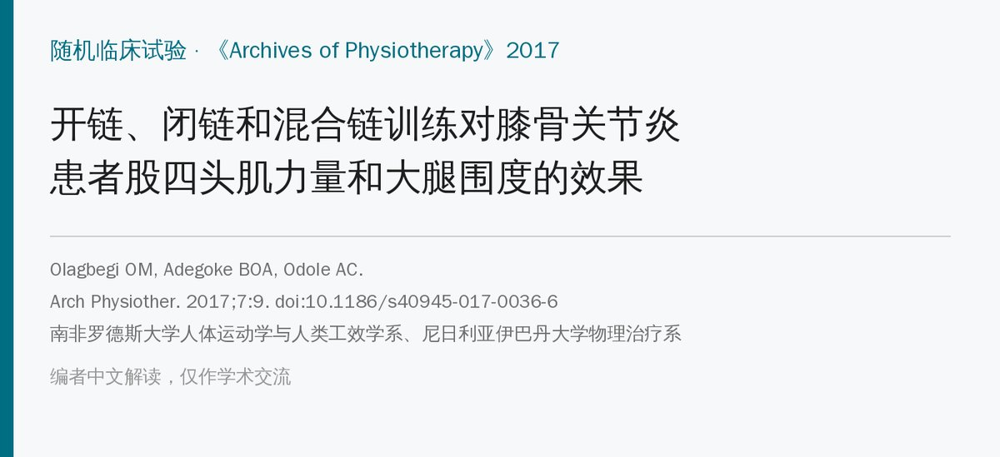
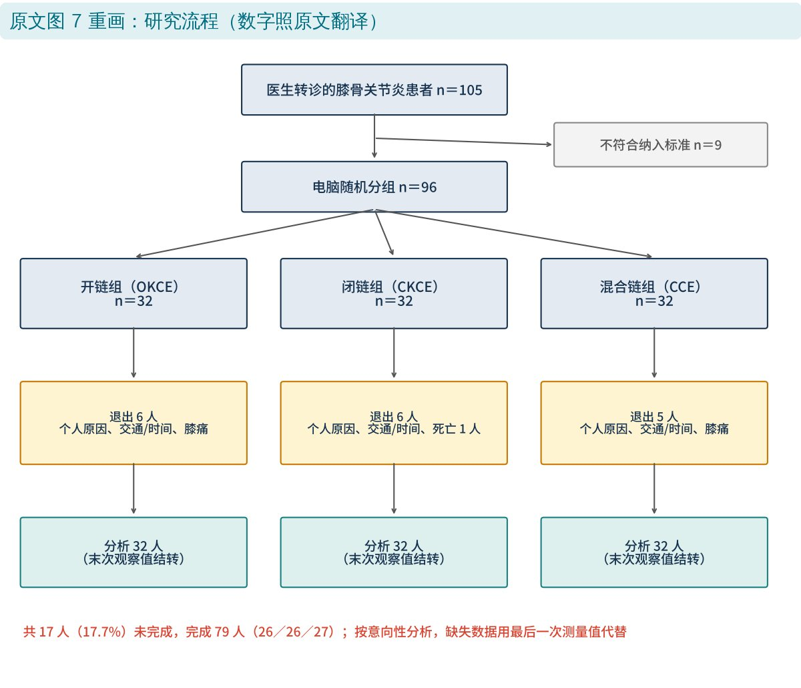
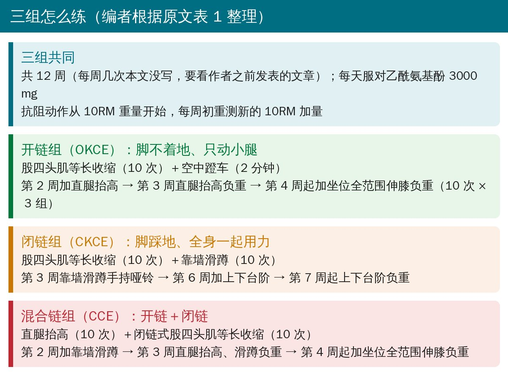
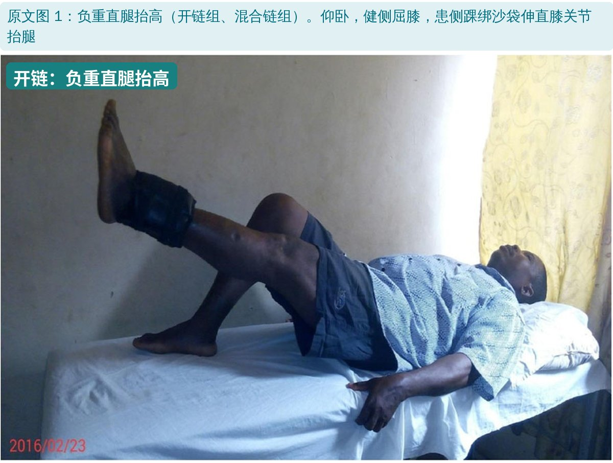
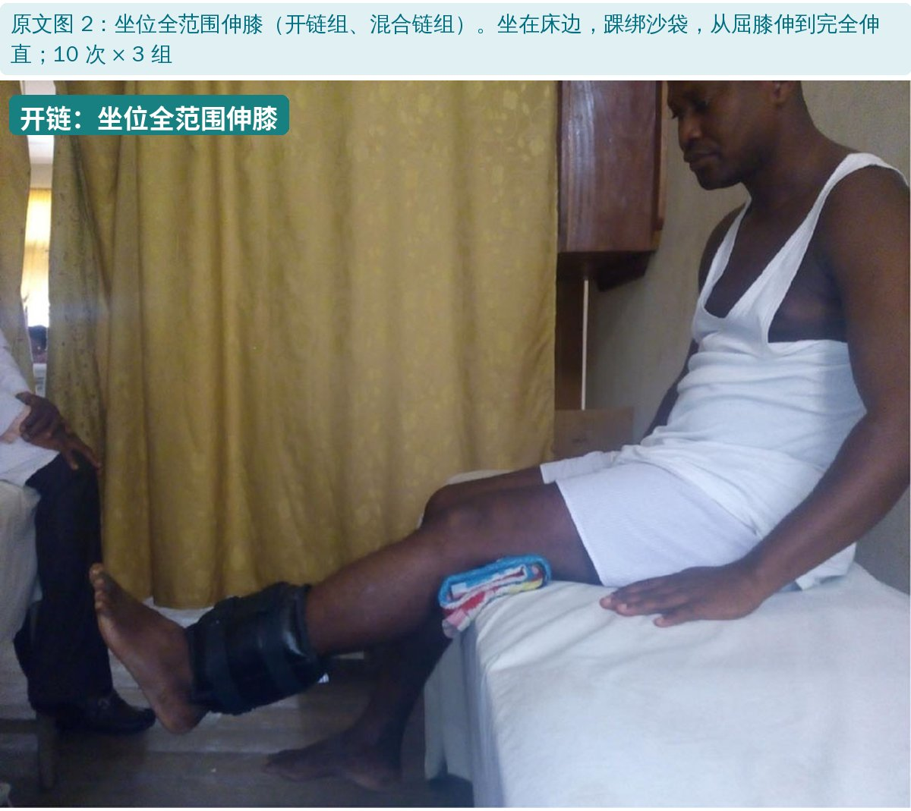
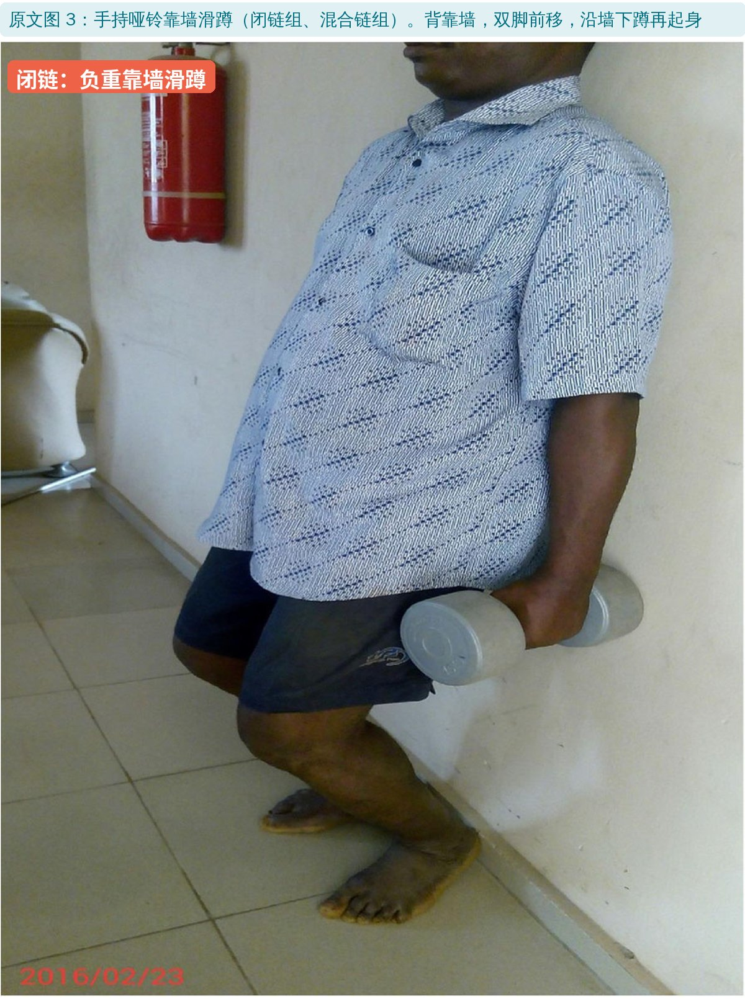
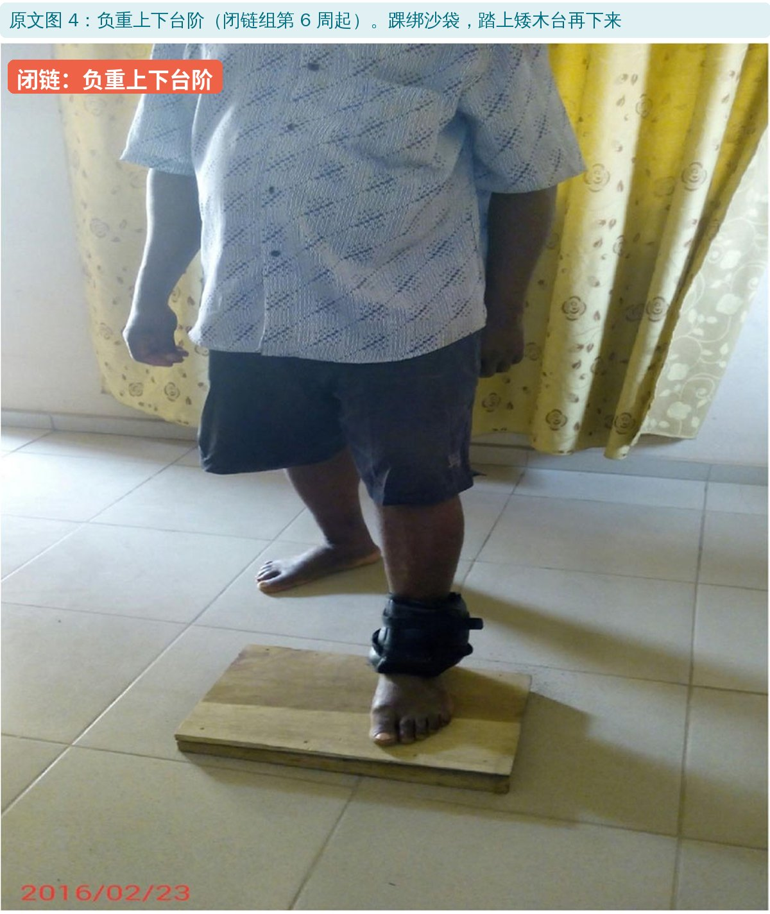
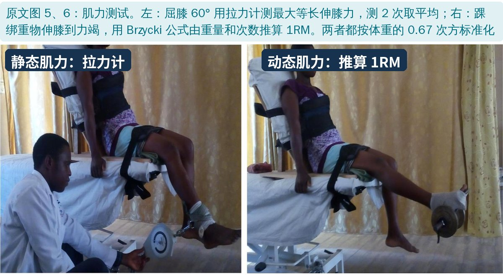
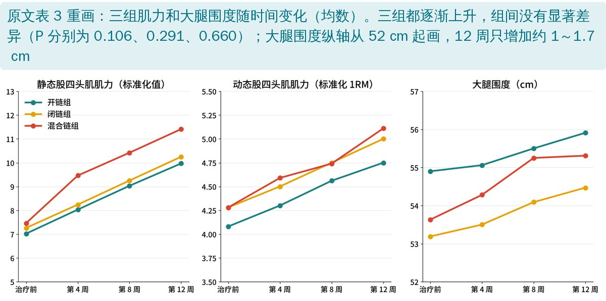

🔖原文信息（编者中文重排）
📚 文献信息
▪ Olagbegi OM, Adegoke BOA, Odole AC. Effectiveness of three modes of kinetic-chain exercises on quadriceps muscle strength and thigh girth among individuals with knee osteoarthritis. Archives of Physiotherapy. 2017;7:9. doi:10.1186/s40945-017-0036-6
▪ 作者单位：南非罗德斯大学人体运动学与人类工效学系、尼日利亚伊巴丹大学物理治疗系；病例来自尼日利亚奥沃联邦医学中心
▪ 文章类型：随机临床试验（96 人，三组比较；是同一试验疼痛结果之外的二次分析）
膝骨关节炎患者的股四头肌普遍无力，而股四头肌是伸膝和稳定膝关节的主力。指南都推荐运动治疗，其中股四头肌力量训练是核心。
力量训练可以分两类：开链（脚不着地，只动小腿，如坐位伸膝、直腿抬高）和闭链（脚踩地，全身一起负重，如靠墙滑蹲、上台阶）。两类单独都有效，但谁更好、两者结合会不会更好一直没有定论。
作者之前发表过这项试验的疼痛结果：开链＋闭链的混合组止痛效果最好。这篇文章接着看肌力和大腿围度。

🔖研究流程（原文图 7 用中文重画）
• 对象：2013～2014 年在尼日利亚奥沃联邦医学中心就诊的膝骨关节炎患者，X 线 Kellgren-Lawrence 2 级，并符合美国风湿病学会临床标准；平均约 61 岁，平均 BMI 约 30（偏胖）
• 排除：合并神经系统疾病、严重全身疾病，或身体条件无法完成训练
• 分组：电脑随机，每组 32 人：开链组、闭链组、混合链组；转诊医生和患者不知道分组，评估者知道
• 疗程：12 周；所有人每天服用对乙酰氨基酚 3000 mg
• 结局：静态股四头肌肌力（拉力计）、动态股四头肌肌力（推算 1RM）、大腿围度（大转子到髌骨尖的中点），在第 0、4、8、12 周测

🔖三组方案总览（编者根据原文表 1 整理）
| 开链组 | 闭链组 | 混合链组 | |
|---|---|---|---|
| 第 1 周 | 股四头肌等长收缩、空中蹬车 | 股四头肌等长收缩、靠墙滑蹲 | 直腿抬高、闭链式股四头肌等长收缩 |
| 第 2 周 | ＋直腿抬高 | 同上 | ＋靠墙滑蹲 |
| 第 3 周 | 直腿抬高改负重 | 靠墙滑蹲改负重（哑铃） | 直腿抬高、靠墙滑蹲改负重 |
| 第 4～5 周 | ＋坐位全范围伸膝负重 | 同上 | ＋坐位全范围伸膝负重 |
| 第 6 周 | 同上 | ＋上下台阶 | 同上 |
| 第 7～12 周 | 同上 | 上下台阶改负重 | 同上 |
原文表 1：12 周训练进阶（中文翻译，“＋”表示在上一阶段基础上增加）
• 每个动作 10 次；空中蹬车连续 2 分钟；坐位全范围伸膝 10 次 × 3 组
• 负重从10RM（能做 10 次的最大重量）开始，每周开始时重测新的 10RM加量
• 靠墙滑蹲用哑铃加负荷

🔖原文图 1：负重直腿抬高

🔖原文图 2：坐位全范围伸膝

🔖原文图 3：手持哑铃靠墙滑蹲

🔖原文图 4：负重上下台阶

🔖原文图 5、6：静态和动态肌力测试
• 静态肌力：靠背坐，屈膝 60°，拉力计连在踝上，最大力伸膝不准猛拉；测 2 次（间隔 90 秒）取平均
• 动态肌力：踝绑一个重量，伸膝到底保持 5 秒再放下，做到力竭；用 Brzycki 公式 1RM ＝ 重量 ÷（1.0278 − 0.0278 × 次数）推算
• 两种肌力都换算成牛顿后再除以体重的 0.67 次方做标准化

🔖三组肌力和大腿围度的变化（编者根据原文表 3 重画）
| 开链组 | 闭链组 | 混合链组 | 组间 P | |
|---|---|---|---|---|
| 静态肌力 治疗前 | 7.02 ± 2.67 | 7.26 ± 2.60 | 7.46 ± 2.39 | |
| 静态肌力 第 12 周 | 9.97 ± 2.78 | 10.25 ± 3.05 | 11.41 ± 2.67 | 0.106 |
| 动态肌力 治疗前 | 4.08 ± 0.68 | 4.28 ± 0.79 | 4.28 ± 0.65 | |
| 动态肌力 第 12 周 | 4.75 ± 0.88 | 5.00 ± 1.10 | 5.11 ± 1.16 | 0.291 |
| 大腿围度 治疗前（cm） | 54.90 ± 7.19 | 53.19 ± 7.43 | 53.63 ± 5.69 | |
| 大腿围度 第 12 周（cm） | 55.91 ± 7.01 | 54.47 ± 7.30 | 55.31 ± 5.70 | 0.660 |
原文表 3、表 5 节选：三组治疗前和第 12 周的结果（均数 ± 标准差，中文翻译；肌力为标准化值）
• 时间效应：三组的静态肌力、动态肌力、大腿围度都随时间显著增加（P<0.001），第 4、8、12 周每个时间点都比前一个高
• 12 周平均增加：静态肌力 3.30（约 +45%）、动态肌力 0.74（约 +18%）、大腿围度 1.32 cm
• 组间：三组之间没有显著差异，组别和时间也没有交互作用——三种方式练肌力效果相当
• 从数字看混合链组的静态肌力涨得最多（+3.95，其他两组约 +3.0），但没有达到统计学差异
• 没有不训练的对照组：作者自己也承认，无法排除安慰剂效应、自然波动和每天 3000 mg 对乙酰氨基酚的影响
• 评估者不盲：知道分组的人在测肌力，作者只是让一名中立助理录入数据
• 退出 17.7%：缺失数据用“最后一次测量值”代替，可能低估或扭曲变化
• 三组训练量不一样：开链组和混合链组后期有 4 个动作，闭链组只有 3 个；作者说三组“强度和进阶相当”，但没有给出训练量的数据
• 肌力测量方法比较粗：拉力计和由次数推算的 1RM 都不是等速测试；大腿围度会受脂肪影响，增加约 1 cm 不等于肌肉肥大
• 只有 K-L 2 级：结果不一定适用于更严重的膝骨关节炎
• 优点：随机分组、样本量事先计算（每组至少 26 人）、按意向性分析、方案逐周写清楚、只用沙袋哑铃等简单器械
• 退出人数加不拢：正文说前 4 周退出 13 人，其中“7 人”没说原因（括号里是 3＋3＋2＝8 人），另有 5 人因交通/时间退出——8＋5 才是 13；第 8 周又退出 4 人，合计 17 人，与流程图 6／6／5 一致
• 表 4 统计量矛盾：大腿围度的时间效应 F＝1.864，却写 P<0.001、偏 η²＝0.426——F 值这么小不可能得到这样的 P 值和效应量，F 值可能有漏印
• 表 2 统计量矛盾：身高 F＝1.466 却对应 P＝0.465（按自由度 2、93 应约为 0.24）
• 置信区间不对称：表 3 开链组治疗前大腿围度 54.90，95% 置信区间却写 53.31～57.50（中点 55.4），其他格都是对称的
• 肌力单位：肌力按体重的 0.67 次方标准化后不再是“牛顿”，但表格和摘要仍标“N”，读者容易误以为静态伸膝力只有 7 N
• 纳入年龄：正文写美国风湿病学会标准“年龄 38 岁以上”，该标准原本是 50 岁以上
• 训练频率缺失：本文没写每周练几次，只说详见之前的文章
• 小错：“Tinaka”（应为 Tanaka）、“Statiic”、“Truamatology”；表 1 闭链组“Wall slides with weight (new 10 RM”括号没闭合
• 开链、闭链、混合都能练出股四头肌力量：12 周效果相当，可以按患者的疼痛、平衡能力、器械条件和喜好来选
• 膝痛明显、站不稳的先从开链（等长收缩、直腿抬高、坐位伸膝）开始；能负重、要回归日常活动的多加闭链（滑蹲、上台阶）
• 混合方案在作者之前的文章里止痛效果最好，本研究肌力数字上也略占优，作为默认方案比较稳妥
• 要逐周加量：每周重测 10RM 再加负荷，这是三组都能涨力量的关键；只做不加量的等长收缩效果有限
• 器械只需沙袋、哑铃、矮台阶，适合基层和居家
欢迎关注骨科康复小黄公众号，获取更多物理治疗的专业知识！
📄参考文献：
Olagbegi OM, Adegoke BOA, Odole AC. Effectiveness of three modes of kinetic-chain exercises on quadriceps muscle strength and thigh girth among individuals with knee osteoarthritis. Arch Physiother. 2017;7:9. doi:10.1186/s40945-017-0036-6
原文以 CC BY 4.0 协议开放获取，版权归原作者所有。本文为学术交流中文解读：原文图 1～6 引自原文，图中中文标签为编者所加；流程图和结果图由编者根据原文用中文重画，方案卡为编者整理，表格为中文翻译。仅供学习交流，如有侵权请联系删除。